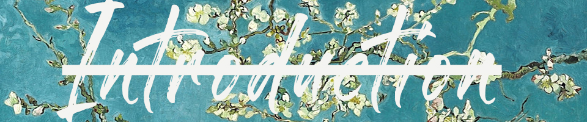

My Name is Zachary Keplinger and im taking this class because I am interested in persuing a career in graphic design and digital illustration.I knew this class would give me the best foundational overview needed for me to begin my journey! My ultimate goal is to work in all of the industries that im passionate about; ranging all the way from the culinary arts to graphic novels and music.